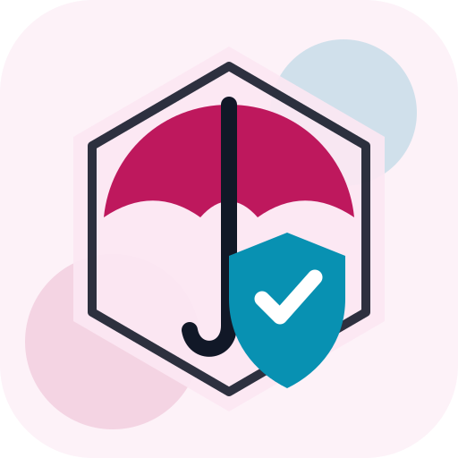

Workers' compensation education and advocacyArizona Self-Insurers Association
A statewide employer association for qualified self-insured entities, large deductible employers, and professionals working in Arizona workers' compensation.
Education
Monthly meetings, annual conference, workshops, seminars, newsletters, and training are listed member resources.
Advocacy
Research confirms workers' compensation legislative and regulatory tracking, lobbyist support, and amicus activity.
Membership
Official membership pages list self-insured and associate membership categories.
Why Skyes Over London Says This Business Is Valley Verified
ASIA is Valley Verified because official pages, a Chamber listing, and National Council of Self-Insurers context back a real Scottsdale employer association with a defined workers' compensation focus.
- The official site publishes the current phone and contact address.
- Official content states ASIA is the only employer association actively involved in Arizona's legislative and regulatory workers' compensation process.
- The official about page confirms affiliation with the National Council of Self-Insurers.